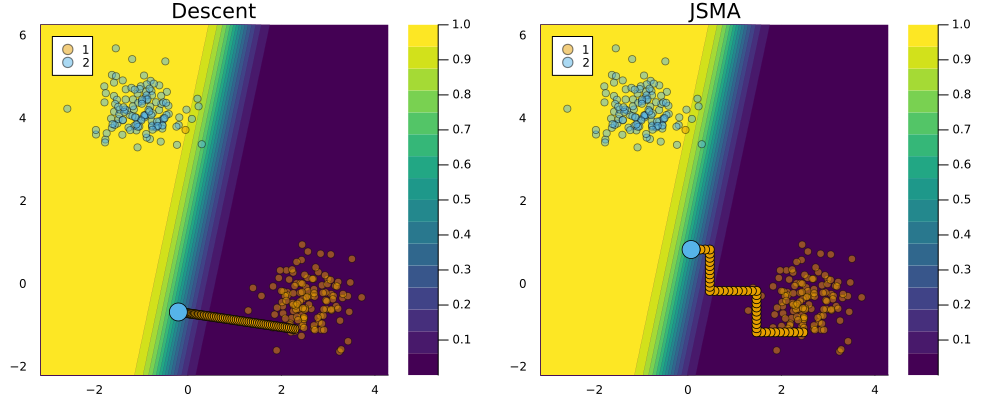

Jacobian-based Saliency Map Attack
To search counterfactuals, Schut et al. (2021) propose to use a Jacobian-Based Saliency Map Attack (JSMA) inspired by the literature on adversarial attacks. It works by moving in the direction of the most salient feature at a fixed step size in each iteration. Schut et al. (2021) use this optimisation rule in the context of Bayesian classifiers and demonstrate good results in terms of plausibility — how realistic counterfactuals are — and redundancy — how sparse the proposed feature changes are.
JSMADescent
To implement this approach in a reusable manner, we have added JSMA as a Flux optimiser. In particular, we have added a class JSMADescent<:Flux.Optimise.AbstractOptimiser, for which we have overloaded the Flux.Optimise.apply! method. This makes it possible to reuse JSMADescent as an optimiser in composable generators.
The optimiser can be used with with any generator as follows:
using CounterfactualExplanations.Generators: JSMADescent
generator = GenericGenerator() |>
gen -> @with_optimiser(gen,JSMADescent(;η=0.1))
ce = generate_counterfactual(x, target, counterfactual_data, M, generator)The figure below compares the resulting counterfactual search outcome to the corresponding outcome with generic Descent.
plot(p1,p2,size=(1000,400))
Schut, Lisa, Oscar Key, Rory Mc Grath, Luca Costabello, Bogdan Sacaleanu, Yarin Gal, et al. 2021. “Generating Interpretable Counterfactual Explanations By Implicit Minimisation of Epistemic and Aleatoric Uncertainties.” In International Conference on Artificial Intelligence and Statistics, 1756–64. PMLR.